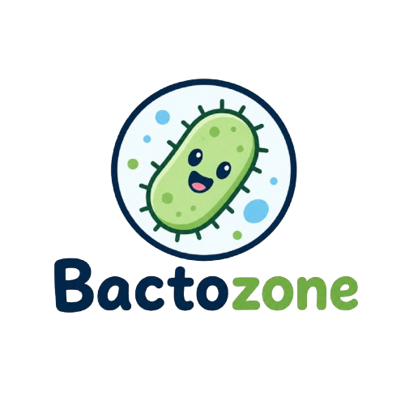
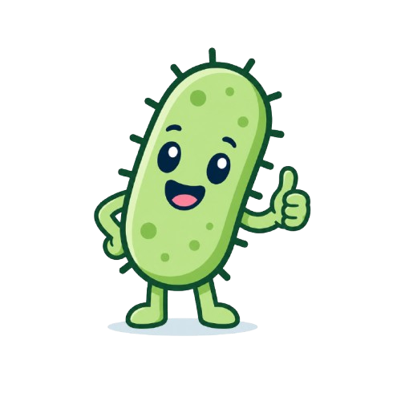

Ternyata penemuan bakteri melalui proses yang panjang loh teman-teman. Ayo kita cari tahu proses penemuan bakteri dan para penemu yang terlibat dalam prosesnya!
Menemukan animacula pada sampel air dengan melakukan pengamatan menggunakan lensa khusus 260x. Dikenal sebagai Bapak Mikrobiologi.
Memperkenalkan kata bacterium yang berarti batang/tongkat karena yang ditemukan pertama kali berupa bakteri berbentuk batang.
Mencetuskan 3 kingdom dari klasifikasi makhluk hidup. Kingdom protista merujuk pada semua makhluk hidup yang tidak memiliki ciri tumbuhan maupun hewan.
Membagi kingdom menjadi 4 dengan memecah protista menjadi protista prokariot dan protista eukariot.
Mengelompokkan golongan prokariot ke dalam kingdom monera dalam sistem 4 kingdom (animalia, plantae, protista dan monera).
Mengembangkan 5 kingdom dan memasukan bakteri ke dalam kingdom monera.
Membagi monera menjadi dua kingdom yaitu Archaebacteria (bakteri kuno) dan Eubacteria (bakteri modern/sejati) karena terdapat perbedaan ciri dan sifat antar keduanya.